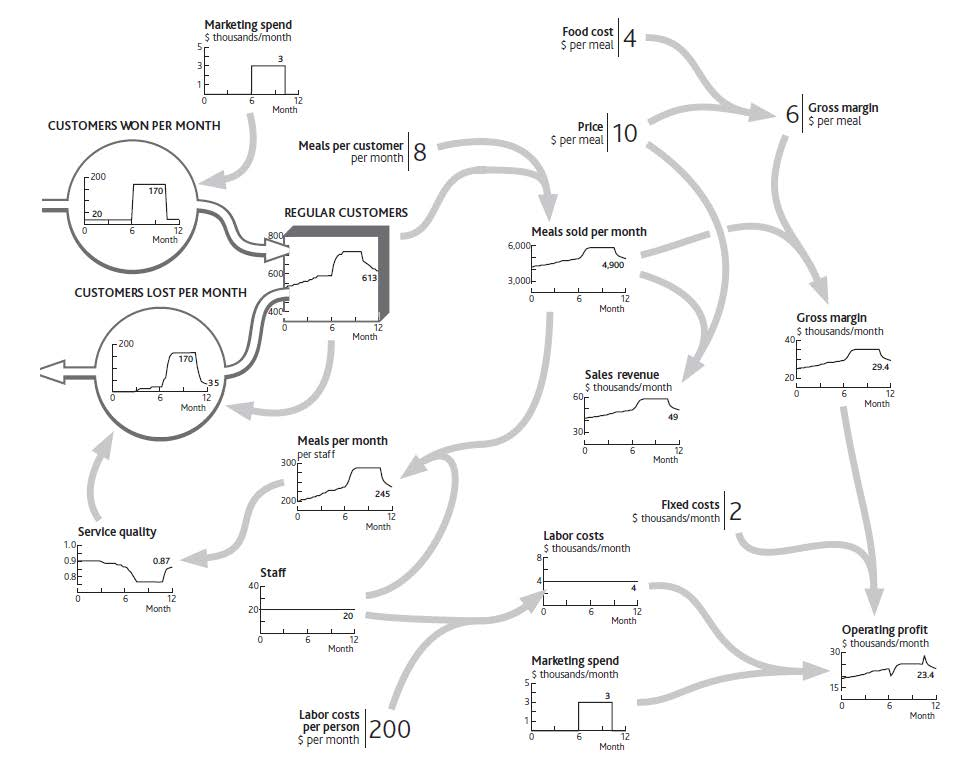

Earlier chapters have given us all the elements we need to develop a complete picture of our business, together with the information that explains why it has performed as it has up to now. These pieces are as follows:
To illustrate these stages, let us go back to the performance of your restaurant that you wanted to understand before deciding what to do next. Start by pulling the pieces together.
The time chart of one or more performance measures, with scale and timing (Figure 1.4 "Restaurant Performance Example").
The list of likely resources involved. (Note: Not all of these may be needed to tackle a specific challenge. Subsequent stages will identify those that are involved.)

The immediate causes of that performance (Figure 2.1 "The Explanation for Restaurant Sales and Labor Costs").
The resources driving demand, supply, and performance (Figure 2.2 "Your Restaurant’s Resources and Operating Profits").
The flows of resources into, through, and out of the organization’s system (Figure 3.6 "The Separate Flows of Customers Into and Out of Your Regular Customer Group").
The immediate causes for these flows to be running at the rate they are (a) why customers are being won (Figure 4.1 "Marketing Decisions Change the Inflow of Customers" shows the “normal” rate at which new customers arrive, plus those won from your marketing spending). (b) why customers are being lost (extended version of Figure 4.8 "The History of Service Quality and Customer Losses").

The dependence of each flow on existing resource levels (Figure 4.9 "Why Service Quality Suffered Then Recovered").
Figure 5.1 "The Strategic Architecture of Your Restaurant, With Data Explaining Recent Performance" is far from a complete architecture of your restaurant. It does not, for example, include certain resources, such as the menu or the seating capacity. Nor does it include potentially important factors that could drive changes in performance, such as price or competitors’ actions. The best approach is to include as much of the architecture as is necessary to create a plausible explanation of performance over time.
This needs great care!
Figure 5.1 The Strategic Architecture of Your Restaurant, With Data Explaining Recent Performance
These elements connect together to provide a complete explanation of recent performance and future challenges (Figure 5.1 "The Strategic Architecture of Your Restaurant, With Data Explaining Recent Performance").